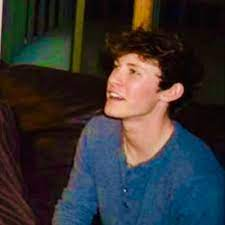

Hi, I'm Collin
I am currently a sophomore at the University of Michigan studying User Experience Design in the School of Information. I am interested in Information Tech, Biotech, Climatetech, Cleantech AI, AR/VR, and Metaverse related tech. My schooling experiences and entrepreneurial endeavors have given me insight into the dynamics of a business-tech career and effectively communicating with professionals and clients.
I am originally from Weston, Connecticut where I played varsity soccer, ran varsity track, and was the President of the my high school environmental club known as the Green Team. After the COVID pandemic began during my senior year of high school, I started working on my first entreprenurial project known as SumCollege; this was the genesis of my journey as a tech entrepreneur, now having worked on several different startup teams.